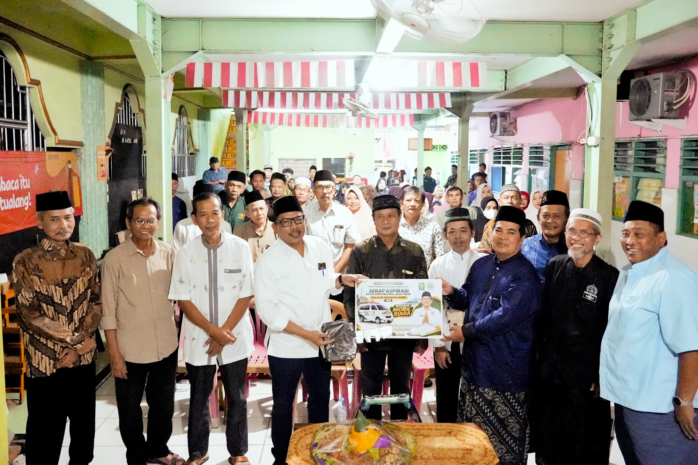

Harapan baru dan solusi konkret kini menyambangi kalangan ibu-ibu pelaku Usaha Mikro, Kecil, dan Menengah (UMKM) serta warga prasejahtera. Ketua Dewan Perwakilan Rakyat Daerah (DPRD) Provinsi Jawa Timur, Drs. H. M. Musyafak Rouf, secara langsung memfasilitasi akses bantuan permodalan usaha dan program pelatihan kerja berbasis kompetensi secara gratis. Inisiatif strategis ini dirancang secara khusus untuk mengangkat derajat kelompok perempuan dari garis kemiskinan, memberikan mereka akses setara terhadap kemandirian ekonomi, serta memperkuat ketahanan finansial keluarga di tingkat akar rumput.
Penyaluran fasilitas bantuan dan penjaringan aspirasi ini direalisasikan melalui sebuah forum pertemuan tatap muka yang diselenggarakan di Balai RW 08, Kelurahan Sawunggaling, Kecamatan Wonokromo, Kota Surabaya. Agenda serap aspirasi reses dewan yang berlangsung pada Minggu, 15 November 2026 malam tersebut, dihadiri secara antusias oleh 125 orang warga. Ruang dialog ini membuka kesempatan bagi masyarakat untuk mencurahkan aspirasi mereka secara langsung kepada wakil rakyat di tingkat provinsi tanpa harus melewati birokrasi yang panjang.
Program pemberdayaan ini digulirkan sebagai respons cepat atas keresahan warga mengenai sulitnya mencari lapangan pekerjaan formal dan mempertahankan kelangsungan usaha mikro di tengah himpitan ekonomi. Melalui pendekatan dialogis dan kekeluargaan, warga yang telah memenuhi kriteria prasejahtera Desil 1 hingga 5 langsung diarahkan untuk mendaftarkan diri pada program bantuan modal KIP JAWARA senilai Rp3.000.000 per orang. Secara paralel, bagi warga usia produktif yang belum memiliki pekerjaan tetap, panitia langsung memfasilitasi pendaftaran pelatihan keahlian di UPT Balai Latihan Kerja (BLK) Surabaya. Program gratis ini menawarkan sertifikasi profesi yang sangat dibutuhkan dunia industri saat ini, seperti teknisi Servis AC dan Social Media Officer. Guna memastikan akuntabilitas dan efisiensi, proses pendataan dilakukan secara presisi malam itu juga, di mana seluruh keluhan serta data warga dimasukkan ke dalam sistem pelaporan terpadu ASPIRA agar dapat segera ditindaklanjuti.

Abah Musyafak, sapaan akrab politisi senior tersebut, menegaskan komitmennya dalam mengawal kesejahteraan masyarakat ke arah yang lebih baik. "Mendengar keluh kesah ibu-ibu di Sawunggaling malam ini, kami hadir membawa solusi konkret agar dapur mereka tetap mengepul dan anak-anak bisa terus bersekolah," ungkapnya merespons aspirasi warga. Ia secara khusus menyoroti nilai filosofis di balik bantuan yang disalurkan pemerintah daerah. "Bantuan modal ini bukan sekadar deretan angka, melainkan harapan agar kaum perempuan kita bisa mandiri, berdaya secara ekonomi, dan menjadi penopang kesejahteraan keluarga," tegas figur utama dari Fraksi PKB ini. Lebih lanjut, ia menjamin kejelasan tindak lanjut program tersebut. "Kami pastikan setiap keluhan warga tidak akan menguap. Semuanya langsung divalidasi ke sistem ASPIRA agar penyelesaian dari pemerintah provinsi bisa segera dieksekusi tanpa menunggu lama," imbuhnya.
Rekam jejak kebijakan yang berfokus pada pengentasan kemiskinan ekstrem di kawasan perkotaan padat penduduk memang menjadi salah satu agenda prioritas legislatif Jawa Timur saat ini. Pemilihan intervensi ganda berupa suntikan dana tunai melalui KIP JAWARA dan sertifikasi profesi di BLK merupakan wujud nyata transformasi bantuan sosial dari yang bersifat konsumtif menuju pemberdayaan yang produktif dan berkelanjutan. Dengan terintegrasinya pengaduan serta data masyarakat ke dalam pangkalan data digital ASPIRA, implementasi program pemberdayaan ekonomi kerakyatan ini diproyeksikan akan berjalan tepat sasaran, dapat diawasi publik secara transparan, serta berdampak langsung pada peningkatan daya saing sumber daya manusia di tingkat regional.